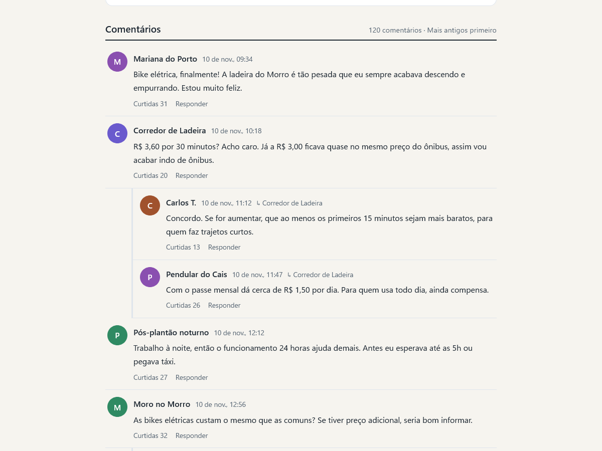
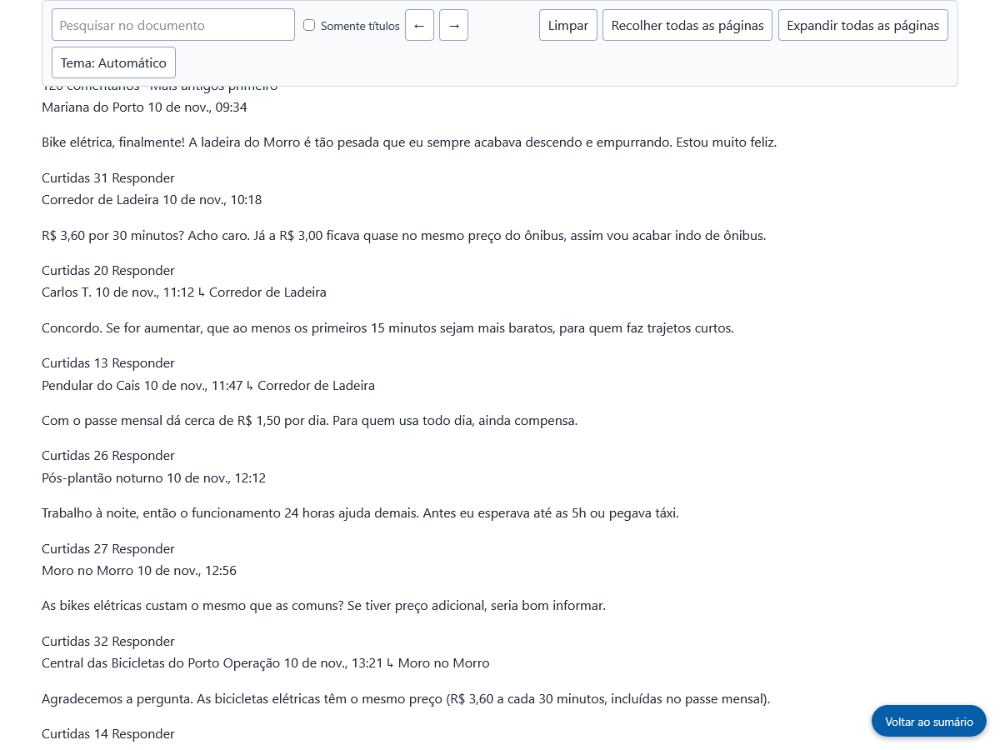

Resultado real do Grab All Files
Uma seção de comentários carregada até o fim e salva em um único HTML (versão gratuita)
Foi salva apenas a página aberta: uma seção de comentários fictícia que carrega mais conforme a rolagem (cerca de 120 comentários, com respostas). A extensão rolou a página sozinha até o fim e reuniu em um único arquivo HTML todos os 120 comentários carregados. A aparência escolhida foi “Fácil de ler”, então o arquivo guarda o texto em um estilo uniforme, e não o design do site.
Arquivos gerados
Lado a lado, com a mesma largura de janela


Como foi feito
- Página de origem
- /samples/source/pt_BR/comment-thread/
- Extensão
- Grab All Files 5.8.68 (a versão publicada nas lojas)
- Navegador
- Firefox 160.0 (Windows 11, headless)
- Plano
- Grátis
- Feito em
- 2026-11-27
- Configurações
- Páginas: apenas página atual
- Aparência: Fácil de ler
- Forma de salvar: HTML com índice e pesquisa